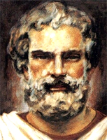
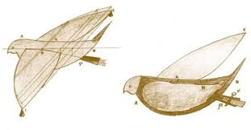
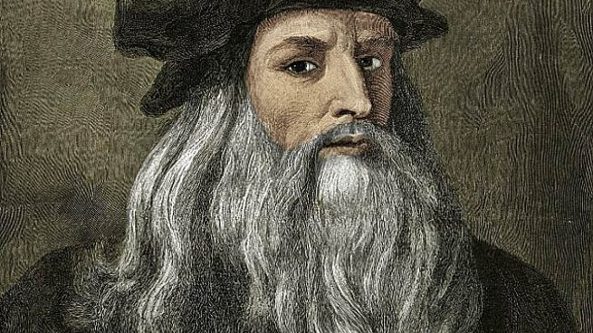
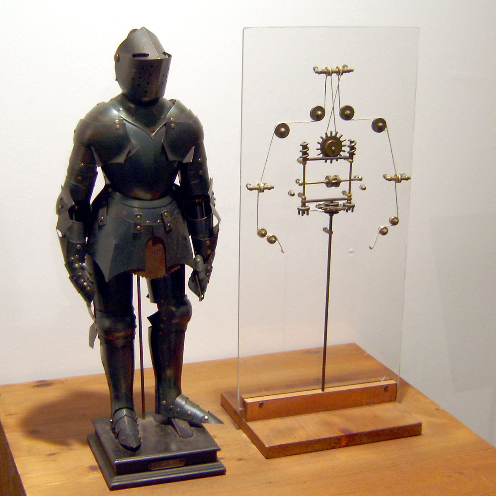
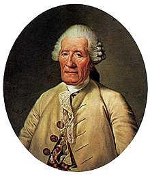
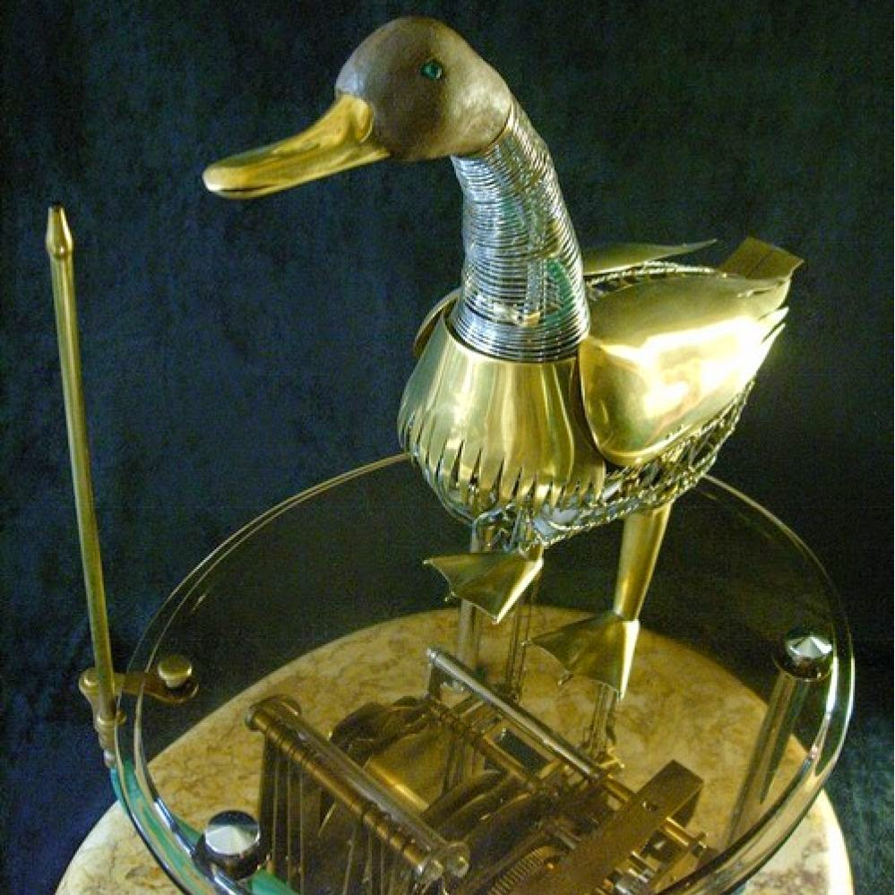
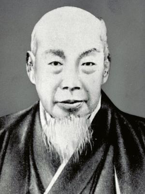
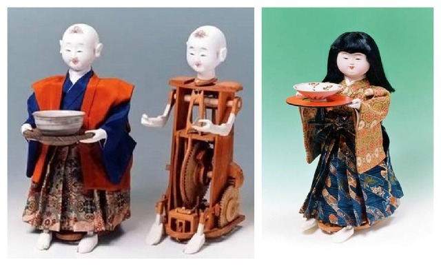
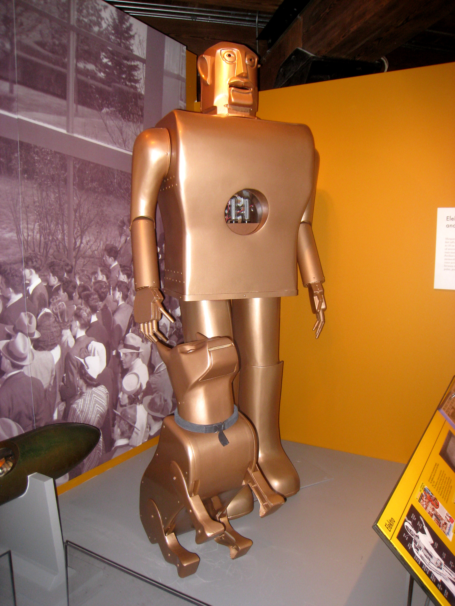
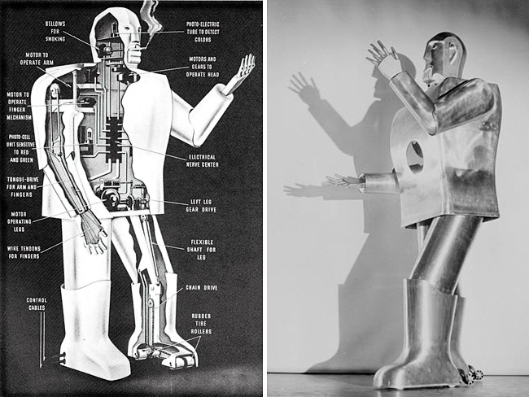

Robot ipsum datus scan amet, constructor ad ut splicing elit, sed do errus mod tempor in conduit ut laboratory et deplore electromagna aliqua. Ut enim ad minimum veniam, quis no indestruct exoform ullamco laboris nisi ut alius equip ex ea commando evaluant. Duis ex machina aute ire dolorus in scan detectus an voluptate volt esse cesium dolore eu futile nulla parameter. Execute primus sint occaecat cupidatat non proident, sunt in culpa qui technia deserunt mondus anim id est proceus.
Se dice que el primer robot creado en el historia resulto ser por un ingeniero del siglo IV antes de Cristo llamado Herón de Alejandría. A las creaciones de este ingeniero, se les llamaba los Autómatas de Herón.
Este construyó un robot en forma de ave que funcionaba a base de vapor, lo denomino “la paloma”. Este mismo creo muchos otros inventos a base de vapor, agua y aire, los cuales los usuarios podían modificar.
Un robot diseñado por Leonardo da Vinci en el año 1495. Esta creación fue de un diseño de un robot humanoide, es decir con características humanas, denominado “Caballero mecánico”.
El robot consistía en un diseño de tipo medieval, un guerrero con armadura, capaz de hacer algunos movimientos parecidos a los de los humanos, como mover los brazos y sentarse, tenía una anatómica correcta con respecto a el diseño del cuello y mandíbula.
“Digesting Duck” fue un juguete creado por Jacques de Vaucanson para el año de 1739, este robot consistía en un pato que tenía la capacidad de comer granos, procesarlos, metabolizarlos y finalmente defecarlos. También era capaz de agitar las alas.
El pato se cree que fue destruido en un incendio en el museo donde se encontraba.
Por el artesano Hisashige Tanaka conocido como “Edison japonés”, creó una gama de juguetes complejos, los cuales podían pintar, servir té y disparar flechas. Estos se denominaron “Juguetes Karakuri”.
Con la revolución industrial se tenía la finalidad de crear robots que suplantaran los trabajos del hombre o que por lo menos le ayudara en su trabajo, así como se crearon también dispositivos que tocaban campanas.
El robot Elektro. O más conocido el robot fumador. Fue creado en Ohio, en 1937 por Westinghouse Electric Corporation Este robot podría decir 700 palabras y caminar mediante comandos de voz. Mide dos metros de altura con un peso de 265 libras, es de apariencia humanoide. Podía seguir luces verdes y rojas con sus ojos.
Fue fabricado con material de acero y su esqueleto sujeto a levas, este es un material mecánico que está sujeto a un eje.
La evolución de los robots fue creciendo más y más desde el siglo IV a.C, hoy en día tenemos los robots integrados por completo en nuestra sociedad.
Ven al presente y conocelos
Ir al presente